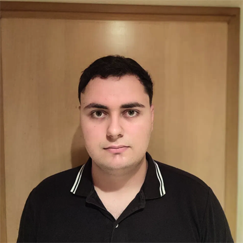

Formación dual en Desarrollo de Aplicaciones Web y Ciberseguridad (720h). Diseño y despliego aplicaciones full-stack de principio a fin, y sé cómo se comprometen los sistemas — una perspectiva que aplico tanto para construir software como para defenderlo.

Empecé formándome en Desarrollo de Aplicaciones Web, aprendiendo a levantar sistemas completos de principio a fin: front, back, base de datos y despliegue. Ese mismo interés por entender "cómo funciona por dentro" me llevó a especializarme en Ciberseguridad, donde profundicé en seguridad defensiva, monitorización con SIEM, análisis forense y hardening de sistemas.
Hoy busco incorporarme como analista junior en un SOC o equipo de seguridad, aportando también la mirada de quien ha construido el software que ahora sabe proteger.
Aplicación web full-stack para coleccionistas y jugadores del One Piece Trading Card Game, desarrollada junto a Rubén García Fernández-Bravo. Permite gestionar colecciones de cartas, construir mazos con validación de reglas, registrar intercambios entre jugadores y visualizar estadísticas mediante gráficos. Incluye buscador avanzado con filtros por color, coste, tipo y líder, exportación/importación de mazos en formato OPTCG/DeckList, y un sistema propio de scraping y sincronización (Python + PyMongo) para mantener actualizados precios, cartas e imágenes desde fuentes externas de forma automática, idempotente y programable vía cron. Desplegada en VPS con gestión de entorno virtual y variables de entorno para las credenciales.
Aplicación web full-stack para competiciones grupales de Nuzlocke Pokémon, con ranking en tiempo real mediante polling API, mapa interactivo con más de 60 zonas, Pokédex integrada con PokeAPI, sistema de torneos por eliminación y autenticación segura (OWASP Top 10, CSRF, rate limiting).
Desarrollo completo de una aplicación web de gestión de facturación para una empresa de servicios de limpieza. Permite crear presupuestos y facturas con generación de PDF, convertir presupuestos en facturas, gestionar clientes y visualizar estadísticas de facturación anuales con gráficos. Autenticación de usuarios con roles (admin/usuario), protección CSRF y rate limiting en el login.
Desarrollo del sitio web de un concesionario de automóviles, desde la maquetación hasta la puesta en marcha, trabajando junto al cliente para definir requisitos y estructurar el catálogo de vehículos.
Fortificación del firewall/router MikroTik backend de una red segmentada (WAN, DMZ con servidor web, red IT) aplicando controles de CIS Controls 7.1 y NIST SP 800-53: control de puertos y servicios, VLAN de gestión dedicada y certificado digital propio para el acceso https al dispositivo. Despliegue y configuración del servicio de monitorización Dude (cliente/servidor) con alertas a Telegram por CPU y caída de servicio, y análisis de logs del firewall para identificar comportamientos anómalos. Simulación de ataques DoS/SYN flood contra el servidor web de la DMZ y aplicación de contramedidas para mitigarlos.
Diseño e implementación de un proxy transparente con Squid para controlar, filtrar y supervisar el tráfico HTTP/HTTPS de una red. Configuración de caché en RAM y disco, políticas de ACLs (whitelist, blacklist de seguridad y blocklist de productividad) y restricción de acceso por horario laboral. Intercepción transparente mediante reglas NAT/Mangle en un firewall MikroTik y reglas iptables en el servidor Squid, con inspección de tráfico HTTPS mediante SSL Bump y certificado de CA propio. Integración con un agente Wazuh para centralizar y analizar los logs de acceso (tráfico permitido, denegado y servido desde caché), incluyendo un análisis de las limitaciones de visibilidad sobre HTTPS (SNI, ECH, DoH) y las mejoras propuestas.
Implementación de una Autoridad Certificadora Raíz (CA Raíz) para una organización, desplegada en
un servidor Ubuntu Server sobre AWS EC2 y gestionada con Easy-RSA: configuración del archivo
vars, generación del certificado raíz y exportación segura mediante SCP. Proyecto
en equipo de cuatro personas dentro del módulo de Bastionado de Redes.
Disponibilidad total. Abierto a incorporarme como analista junior en ciberseguridad o a proyectos de desarrollo full-stack.